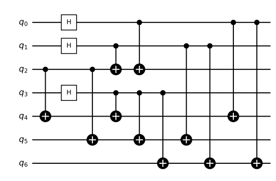

Part 1 · The code · Chapter 2 · 7 min read
The Steane code: seven qubits, one logical qubit
You will be able to read the triangle: which vertices are data qubits, which faces are checks, why the same matrix serves both kinds of check, and why any single error can be corrected.
Key terms
A triangle that holds one qubit
The Steane code stores one logical qubit in seven data qubits. The simulator draws them as a triangle: the seven data qubits are the vertices, numbered 0 to 6, and the three faces are the checks. A check is a parity question about the four data qubits at the corners of one face. Face 1 covers qubits 3, 4, 5 and 6, face 2 covers 1, 2, 5 and 6, and face 3 covers 0, 2, 4 and 6.
The code is described by its parameters, written : physical qubits, logical qubits and distance . The Steane code has , and .
In words: seven qubits carry one logical qubit and the code can correct one error. Each row of the check matrix is one face, with a 1 for each qubit the face covers. This is the matrix in engine/steane.py.
One matrix, used twice
The Steane code is a CSS code: it keeps bit flips and phase flips apart. The three rows of are used once as Z checks, which detect bit flips, and once as X checks, which detect phase flips. That gives six checks per block, which is why the grid has six columns per logical qubit, orange for the Z checks and blue for the X checks. The same pattern of faces answers both questions, so a phase flip on qubit 4 lights the same blue faces that a bit flip on qubit 4 lights in orange.
It works because the rows of overlap on an even number of qubits: any two faces share exactly two vertices. A Z check and an X check on overlapping qubits therefore commute, and measuring one does not disturb the other. Chapter 3 shows how the three answers name the faulty qubit.
Why distance 3 is enough for one error
The distance is the smallest number of errors that turns the stored qubit into a different one while every check still reads zero. For this code it is 3. A single error always leaves some check lit, and the lit pattern points at it, so it can be undone. Two errors can look like one error elsewhere, and the repair then completes a three-error operator on the logical qubit. This is why the simulator reports failures at higher noise: past one error per round, correction can go wrong.
Building the logical qubit
The encoder takes the state on qubit 2 (the INPUT in steane.py) and spreads it over the other six, using two kinds of gate. A CNOT copies a basis value, not a state, onto a target. A Hadamard gate (H) puts a qubit into an equal mix of 0 and 1 so that it controls more CNOTs. In the code the sequence is two CNOTs from qubit 2, then three rounds of an H on a pivot qubit followed by three CNOTs. The pivots are qubits 3, 1 and 0.

steane.encode): two CNOTs from qubit 2, then three H-and-CNOT stages, 11 CNOTs and 3 H in all.Preparation is not protected: noise in the simulator starts after encoding.
Why it matters here
Two such blocks, qubits 0 to 6 and 7 to 13, hold the two logical qubits of every circuit in the simulator. That is 14 data qubits; chapter 4 explains the fifteenth.
Try it in the simulator
Set the noise to Depolarizing, p = 0.01, press Run and watch the triangles. Look at the verdict under each triangle: a shot that ends with a cross is one where the errors were too many for the code.
Open the simulator with this setupCheck yourself
Which qubits does face 3 cover?
Qubits 0, 2, 4 and 6, the ones with a 1 in the third row of .
What do the numbers in [[7,1,3]] mean?
Seven physical qubits, one logical qubit, distance 3: any single error is corrected.
Why can one matrix give both kinds of check?
The code is CSS: Z checks and X checks each use the rows of , and any two rows overlap on an even number of qubits, so the checks do not disturb each other.
Sources
- A. M. Steane (1996). Error correcting codes in quantum theory. Physical Review Letters 77, 793. doi.org/10.1103/PhysRevLett.77.793
Supports: the seven-qubit code. - A. M. Steane (1996). Simple quantum error-correcting codes. Physical Review A 54, 4741. arxiv.org/abs/quant-ph/9605021
Supports: a fuller account of the same code. - A. R. Calderbank, P. W. Shor (1996). Good quantum error-correcting codes exist. Physical Review A 54, 1098. doi.org/10.1103/PhysRevA.54.1098
Supports: CSS codes, the construction the Steane code belongs to. - M. A. Nielsen, I. L. Chuang (2010). Quantum Computation and Quantum Information, 10th anniversary edition. Cambridge University Press. ISBN 978-1-107-00217-3. www.cambridge.org/9781107002173
Supports: the Steane code and its encoder (chapter 10 of the book).